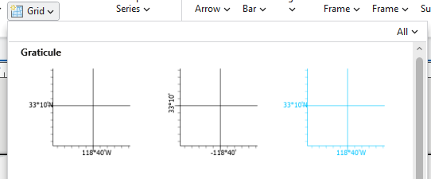
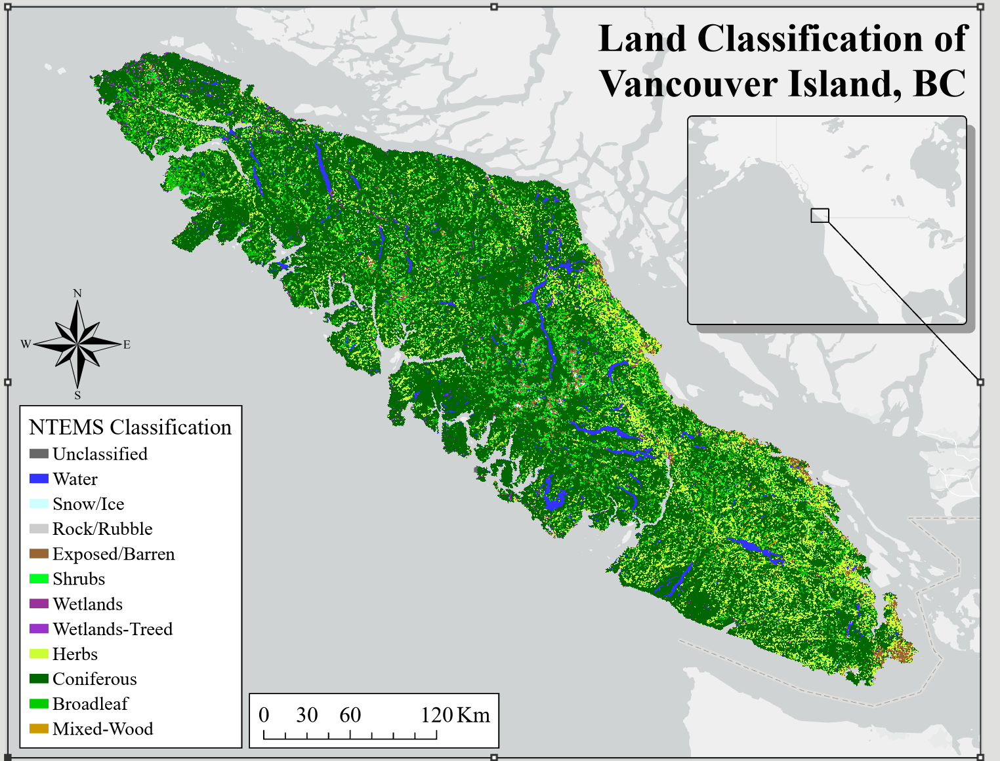

ArcGIS Pro Demo
ArcGIS Pro Tips and Tricks
As MGEM students, you all have access to ArcGIS Pro, a powerful GIS software that allows users to perform geospatial tasks and create beautiful maps. This demo focuses on the map-making capabilities of ArcGIS Pro and provides an easy reference guide for implementing core cartographic concepts and best practices. While you may have experience using ArcGIS either in or outside of MGEM, you can use this guide as a best practice resource to refer to either during your courses, or any time you’re trying to solve a tricky map.
Projections
Displaying your map frame in an appropriate coordinate system is important for visualization. For example, the two photos below show very different projections, and while both are technically not wrong, the one using the Mercator is clearly much better suited for our data
You can change the projection of your map view by right-clicking on the ‘Map’ in your drawing order, and going to properties (below-left). Under the Coordinate Systems tab, you may then select a projection suitable for viewing your map (bottom-right).
Tip: Using the search bar can be the fastest way to find a projection you’re looking for, but the layers drop-down will have all the projections of any layers on your map already ready for easy selection. You can also save your most common projections under Favorites if you find yourself using the same projections over and over.
Inset Maps
In order to help our map-viewers out a little more, we can insert another map frame on our layout, showing where in Canada we are. To do so we will want to put this data in a separate ‘Map’ tab. To create one, simply click on the ‘New Map’ button on the top left of your Arc screen. Now that we have this new ’Map”, and have added our data, we can go back to our layout, and add our helpful extent map.
After selecting your layout, navigate to the ‘Insert’ tab on the top of your screen, and select ‘Map Frame’. This will give you an overview of all the maps you have created in your Arc Project, and will allow you to select one to add to your layout. We can now select the one created above, and add it to our layout by dragging a box in the spot where we wish to place it. You can then add elements such as leader lines, and separate scale bars if you feel it is appropriate.
Legends
Adding a legend
Legends are a fundamental component of any map. It is where we give the map-viewer the tools they need to interpret the data that we are presenting to them. Inserting a Legend is relatively straightforward – you can simply navigate to the ‘Insert’ tab for your layout, and click on ‘Legend’. However, once you have inserted a Legend, you may find it doesn’t look exactly appealing, and we may have to take some steps to clean things up a bit. First and foremost, there may be layers on display which we do not wish to include in our legend – to avoid clutter.
Customizing your legend
Customizing you legend can probably be one of the more frustrating things to do in ArcGIS. The quickest way to make changes is to use the properties of the legend, accessed by right clicking it and selecting the Properties option at the bottom. This will open a window on the right with lots and lots of options on things you can change. See this link for some helpful tips Legends Tips
Changing the name of your layers can be one of the easiest things to forget when creating a map in ArcGIS, but probably the biggest difference maker when creating a map. To do so, simply right click the layer to access its Properties. In the top option, General, there is a name bar where you can type whatever name you feel is best, the great thing about this is you can use spaces and capitalized letters which often isn’t the default with GIS!
Gridlines and Graticules
It can sometimes be easy to forget that the people looking at your maps are not as familiar with the data, area, and topic as you are. People from all over the world map end up looking at your map, so it is always important to make sure everyone – regardless of their background knowledge – is able to interpret and read your map. For the example shown in this document so far, people from Eastern Canada may recognize the Hudson’s Bay area in the map, yet many of us may be initially confused as to where this study area is located. There are a few ways by which we can make this easier for our map-viewer to interpret. On of these ways is by inserting grid-lines which show lat/lon lines across our map. To do so, navigate to the ‘Grid’ option in the Insert bar for your layout, and select one of the grid options.

This will add grid-lines to our drawing order, as well as map view. Similarly to the legend, we can right click on the grid lines in our drawing order, select properties, and make adjustments as we wish to alter the appearance of thegrid lines (not shown here).
North Arrow and Scale Bar
Now that we have got ourselves a nice looking map, we have to add the finishing touches. No map is complete without the essential North Arrow and Scale Bars. Thankfuly, both are easy to add! Simply select the ‘North Arrow’ Dropdown at the top of your screen, and choose whichever strikes your fancy.
For scale bars, simply select the ‘Scale Bar’ dropdown, select one of the available options, and drag a box where you would like to place it. Now it is important to note that when you add a scale bar or north arrow, it will do so based on the map frame you have selected in your layout. Since we are making use of an inset in this example, we will then need to make sure to add a second scale bar to show the scale of our inset. Simply select the inset map frame in the layout, and add a second scale bar – placing it in an appropriate spot.
Final Product
In the end if you follow these basic steps you should end up with a beautiful map! While it takes time to tinker with each map to be perfect for the context and data you’re dealing with, the result is always worth it. Not each bit listed in this will be essential each time, so always consider scale and context of your areas.
If you’re still having issues, ArcGIS has lots and lots of great online resources for map making.
